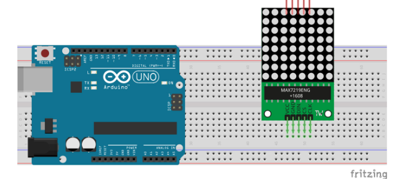
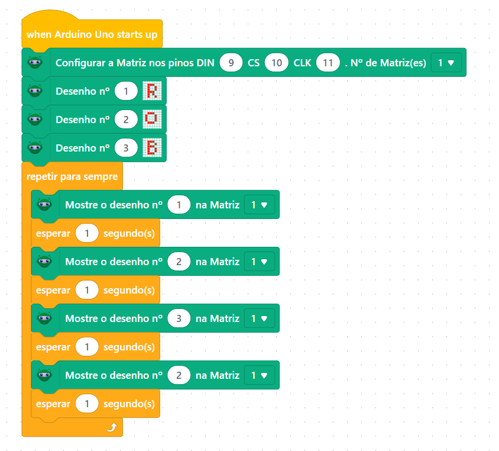

Robotica
Letreiro 8x8
Módulo Matriz De Led 8x8 Max7219, o controlador permite a possibilidade acender led por led através apenas de 5 conecxões

| Arduino | letreiro |
| GND | GND |
| 5V | VCC |
| pino 8 | DIN |
| pino 9 | CS |
| pino 10 | CLK |
Ao fazer as conecxões precisa entrar no mblock e baixar a biblioteca RB-Matriz de LEDs

basta agora mudar os desenhor ou até colocar letras para formar palavras
para transformar em um letreiro podemos usar a seguinte programação
Agora basta colocar a sua mensagem.